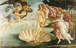
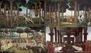
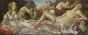
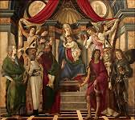

Сандро Боттичелли
Щёлкните на изображение, чтобы его увеличить
1 
2 
3 
4 
5 
6 
7 
8 
9 
10 
11 
12 
13 
14 
15 
16 
17 
18 
19 
20 
21 
22 
Алессандро ди Мариано Филипепи, известный как Сандро Боттичелли
(1445, Флоренция – 1510, Флоренция)

Введение
До сих пор неизвестно, почему сын флорентийского кожевника Мариано Филипепи, Алессандро, известный также как Сандро, взял псевдоним ‘Боттичелли’. Хотя он многому научился у этого мастера – создателя несколько грузных, но элегантных форм, ещё больший интерес Сандро проявил к экспериментам двух художников, принадлежавших ко второй волне Флорентийского Ренессанса: Андреа Верроккьо (Andrea Verrocchio), чьим помощником он проработал некоторое время, и Пьеро Поллайоло (Piero Pollaiolo). Их нервный, утончённый стиль основывался на хорошем знании анатомии, а у Поллайоло дополнялся еще и умелой передачей движения. В том же стиле творил скульптор Агостино ди Дуччо (Agostino di Duccio) (1418-после 1481), который также, скорее всего, повлиял на развитие творчества Боттичелли.
Художник в поисках стиля
На нескольких «Мадоннах с младенцами» (1) этого периода изображены изящные аристократичные ангелы, по которым видно, как влияние Липпи, постепенно уступает влиянию Верроккьо. Среди этих мадонн стоит отметить находящихся в «Академии» и Галерее Уффици во Флоренции (Uffizi Gallery in Florence), Художественной Галерее Каподимонте в Неаполе (Capodimonte Art Gallery in Naples), Музее Феша в Аяччо (Fesch Museum in Ajaccio), в Лувре, в Лондонской Национальной Галерее (National Gallery in London), в Вашингтонской Национальной Галерее (Washington National Gallery) и т.д. Боттичелли получил свой первый официальный заказ в 1470 году, благодаря помощи Томмазо Содерини (Tommaso Soderini), наперсника Медичи; это была «Аллегория мужества» (2), метафорическая картина для торгового суда Флоренции. В этом произведении, ныне находящемся в Уффици, прослеживается влияние Пьеро Поллайоло, которому изначально предлагали написать всю серию «Семи добродетелей», и Верроккьо, раз и навсегда вытеснившего влияние Липпи. «Мадонна с Младенцем и шестью святыми» (The Madonna with Six Saints) (3) (Уффици) близка к «Аллегории мужества» по стилю и, безусловно, по времени. В 1472 году Боттичелли поступилв Академию Святого Луки. Примерно в это же время он написал две небольшие картины «История Юдифи» (Story of Judith) (Уффици); это были уже образцы блестящего мастерства. «Святой Себастьян» (4) в Берлинском Музее, вероятно, попавший туда из флорентийской церкви Санта Мария Маджоре, создан, скорее всего, немного позже. Аккуратная анатомия напоминает о Поллайоло, однако в задумчивом выражении лица гораздо больше одухотворённости. В 1474 году Боттичелли был приглашён в Пизу для завершения фрескового цикла в Кампо Санто (Campo Santo), однако приступить к этому проекту он так и не смог.
Покровительство Медичи
По возвращении во Флоренцию, в 1475 году Боттичелли попросили нанести изображение Афины Паллады (Pallas) на знамя Джулиано Медичи (Giuliano de’ Medici) для участия в рыцарском турнире на Пьяцца Санта Кроче (Piazza Santa Croce); художники того времени не гнушались такой работой. В результате Боттичелли оказался при дворе Медичи. Примерно тогда же друг этого прославленного семейства, банкир Джованни Лами (Giovanni Lami), заказал ему картину «Поклонение волхвов» (Adoration of the Magi) (5) (Уффици) для своей капеллы Санта Мария Новелла (Santa Maria Novella). Это была первая большая работа мастера. Среди множества персонажей Боттичели изобразил на ней себя и нескольких Медичи: Козимо Старшего (Cosimo the Elder), Пьеро иль Готтозо (Piero ‘il Gottoso’), Джованни (Giovanni,), Джулиано (Giuliano), Лоренцо (Lorenzo). Эту картину можно сравнить с рядом прекрасных одиночных портретов: «Портретом мужчины, держащего медальон Козимо Старшего» (one of a man holding a medallion of Cosimo the Elder) (Уффици) и «Портретом Джулиано Медичи» (the one of Giuliano de’ Medici) (Национальная Галерея, Вашингтон).
В 1478 году Боттичелли получил заказ на изображение участников заговора семьи Пацци, повешенных после его неудачи; эта проходная работа не сохранилась. Примерно тогда же художник завершил «Мадонну с восемью поющими ангелами» (Madonna with eight Angels) (Берлинский музей), «тондо», безусловно происходящее из Сан Сальваторе аль Монте (San Salvatore al Monte), и самую известную свою картину «Примавера» («Весна») (La Primavera), которую заказали ему в 1477 году два брата Медичи, Лоренцо и Джованни ди Пьерфранческо, для Виллы ди Кастелло (Villa di Castello) неподалёку от Флоренции (ныне картина находится в Уффици). Совершенство линий, которое мы видим в этой картине, превращает идеализированный мир неоплатонических мыслителей в художественную реальность и является знаком того, что Боттичелли нашёл свой собственный неподражаемый язык, который он использовал также для двух аллегорических фресок на Вилле Торнабуони-Лемми (ныне находятся в Лувре), дата создания которых не установлена: «Юноша перед аллегорическими женским фигурами семи свободных искусств» (a young man before the Assembly of the Arts, personified as female figures) и «Девушка, принимающая дары от Венеры и граций» (a young woman receiving gifts from Venus accompanied by the Graces).
Пребывание в Риме
Ключевой момент карьеры Боттичелли – его пребывание в Риме в 1481 - 1482 годах. По условиям контракта, подписанного 27 октября 1481 года, Папа Сикст IV (Pope Sixtus IV) предложил ему вместе с Козимо Росселли (1439-1507), Гирландайо (Ghirlandaio) и Перуджино (Perugino) (вскоре к ним присоединились Синьорелли (Signorelli), Пинтуриккио (Pinturicchio) (1554 ?–1613) и Пьеро ди Козимо (Piero di Cosimo) (1462–1521)) создать ряд фресок на священные сюжеты, проводящих параллели между Ветхим и Новым Заветом, и в то же время содержащих намёки на деятельность самого понтифика. Эти фрески должны были располагаться на стенах капеллы, недавно построенной в Ватикане и получившей название «Сикстинской капеллы». Вклад Боттичелли -- три композиции: «Юность Моисея» (The Youth of Moses), «Наказание мятежных левитов» (The Punishment of the Rebelling Levites) и «Искушение Христа» (The Temptation of Christ) (7). Нетрудно заметить, что каждая из них, согласно средневековой традиции, сочетает несколько эпизодов. Потрясающее «Поклонение волхвов», выставленное в Национальной Галерее Вашингтона, несомненно, является ещё одним произведением римского периода.
Период флорентийской славы
Во Флоренции этого периода правил Лоренцо Великолепный (Lorenzo the Magnificent), страстный поклонник гуманизма. Он и его окружение считали Боттичелли лучшим переводчиком языка гуманизма на язык искусства. И вновь по заказу Лоренцо Великолепного и Джованни ди Пьерфранческо он вскоре после своего возвращения написал два известных мифологических сюжета для Вилла ди Кастелло (ныне в Уффици): «Минерва и кентавр» (Minerva and the Centaur) (8) и «Рождение Венеры» (The Birth of Venus) (9). Также, возможно, именно для «Иль Манифико» он изобразил «Историю Настаджио дельи Онести» (Story of Nastagio degli Onesti) (10), на сюжет Боккаччо (Boccaccio), на четырёх панелях, три из которых представлены в Прадо (Мадрид), а одна – в частной коллекции в США. Изображение «Марса и Венеры» (11) (Лондонская Национальная Галерея), вероятно, было заказано другой знатной семьёй, Веспуччи (Vespucci). Примерно в 1485 году Боттичелли, как известно, возвращается к изображению Мадонны и с лёгкостью доводит его до совершенства. Наиболее известными вариациями на эту тему являются «Мадонна с книгой» (Madonna with the Book) в музее Польди Пеццоли (Милан); «Мадонна дель Маньификат» (Madonna of the Magnificat) (12) и «Мадонна с гранатом» (Madonna with Pomegranate) (Уффици), две последние выполнены в виде «тондо»; и, наконец, «Мадонна Барди» (the Bardi Madonna) (13) (Берлин), заказанная Агноло Барди (Agnolo Bardi) для капеллы Санто Спирито (Santo Spirito) во Флоренции. Незадолго до 1490, художник получил два заказа на масштабные произведения, редкие в его карьере: алтарный образ церкви святого Барнабаса (St Barnabas’) (14) (Уффици) для флорентийского братства врачей и аптекарей, на главной панели которого была изображена дева Мария, восседавшая на троне, шестеро святых и четыре ангела на фоне архитектурного пейзажа, а на пределах еще несколько разнообразных сцен, и алтарный образ церкви Святого Марка (Уффици), выполненный для гильдии ювелиров; на основной части его была изображена коронация девы Марии и четверо святых, а на пределах –священные сюжеты. На обеих картинах видны следы работы учеников мастера.
|
ИЛЛЮСТРАЦИИ ДЛЯ «БОЖЕСТВЕННОЙ КОМЕДИИ» ДАНТЕ Сандро Боттичелли начал выполнять иллюстрации к «Божественной комедии» Данте по просьбе Лоренцо ди Пьер Франческо Медичи (Lorenzo di Pier Francesco di Medici) примерно в 1490 году. Его рисунки позволяют нам увидеть, насколько флорентийский художник был очарован этим шедевром поэзии и гуманизма, созданным воображением Данте Алигьери.
|
КРИЗИС
Смерть Лоренцо Великолепного в 1492 году положила конец наиболее яркому периоду в истории флорентийской культуры. После несчастий, которые навлекла на город неудачная политика Пьеро Медичи, неудивительно, что теократическая диктатура Савонаролы была враждебна гуманизму. Длительный политический и духовный кризис флорентийского общества объясняет личный кризис Боттичелли, признаки которого стали проявляться у него ближе к концу жизни. Его последние работы отличаются экзальтированным религиозным чувством, что неудивительно, принимая во внимание влияние Савонаролы.
К этому периоду, к которому также принадлежат рисунки для «Божественной комедии» Данте (15), относится лишь одна серьёзная картина на светский сюжет – «Клевета» (Calumny), созданная для Антонио Сеньи (Antonio Segni) по описанию древнего шедевра Апеллеса (Apelles); здесь гуманизм вновь наполнен христианским размышлением. «Благовещенье» (Annunciation) (16), написанное примерно в 1490 году для церкви Санта Мария Маддалена деи Пацци (Santa Maria Maddalena dei Pazzi) (Уффици), обновило этот сюжет, привнеся в него динамичные позы и драматическую атмосферу; а «Мадонна с младенцем и Иоанном Крестителем» (Standing Madonna with Child and St John the Baptist) (17) (дворец Питти), написанная несколькими годами ранее, демонстрирует новый образец рельефной композиции. Две Пьеты, написанные около 1495, (одна из них находится в Художественной Галерее Мюнхена и другая – в музее Польди Пелиццоли в Милане) поднимают драматическое напряжение на высшийуровень; а одинокая фигура (без сомнения принадлежащая обесчещенной Фамари (Thamar) и известная как «Покинутая» (La Derelitta) (19) (Дворец Роспильози (Rospigliosi), Рим) становится воплощением скорби. Всё это не мешало Боттичелли параллельно выполнять небольшие работы высочайшего мастерства, форма подачи которых была менее трагичной и в то же время подходящей для отражения внутреннего мира: изображение «Святого Августина» в Уффици, «Последнее причащение святого Иеронима» (Annunciation and the Communion of St Jerome) (20) в музее Метрополитэн, Нью-Йорк; сцены из «Жизни Святого Зиновия» (Life of St Zenobius), изображённые на четырёх панелях (Лондон, Нью-Йорк и Дрезден). Наконец, наставления Савонаролы непосредственно повлияли на «Мистическое Рождество» (Mystical Nativity) (21), находящееся в Лондонской Национальной Галерее (1501), и «Распятие» (Crucifixion) с видом Флоренции (22), находящееся в Музее Искусств Фогга, Кембридж (Массачусетс).
После смерти Боттичелли, молодые художники – Микеланджело, Леонардо да Винчи, Андреа дель Сарто, Рафаэль – начали развитие Ренессанса в другом направлении. Выйдя из моды, картины Боттичелли канули в забытье, лишь в XIX веке вернув себе заслуженное признание.
ЛИНИЯ, ДВИЖЕНИЕ И ЦВЕТ
В эпоху Возрождения Флоренцию охватило эстетическое движение, у истоков которого стояли художники первой половины XV века вроде Мазаччо (Masaccio) и Учелло (Uccello), главной целью которых было изображение мира, в котором материальные сущности подчинялась бы законам разума, а объемные предметы занимали бы пространство, рационально организованное геометрической перспективой.
В целом, нельзя сказать, что Боттичелли следовал этому движению, часто он даже противоречил ему, хотя и доказал, что может творить в соответствии с его принципами: «Поклонение волхвов» (Уффици) и ещё одно «Поклонение» в Национальной галерее Вашингтона демонстрируют безупречную тщательно просчитанную композицию со схождением перспективы в одной точке; объемность фигуры (фреска «Святой Августин» в церкви Оньисанти (Ognisanti) во Флоренции (1480)), показывает мастерство, не уступающее Андреа дель Кастаньо (Andrea del Castagno), в то время как изображение деталей на этой фреске демонстрирует плотский, педантичный реализм, весьма несвойственный работам художника.
Боттичелли мог бы продолжать поиски в этом направлении, однако его личный мир это скорее мир поэтических случайностей, а не научных закономерностей. В этом мире фигуры не уменьшаются согласно законам перспективы, а находятся в плоскости, расположенной очень близко от зрителя, отдельно от заднего плана, который служит для ограничения глубины, неважно, состоит ли он из архитектурных элементов, драпировки или пейзажа. Иногда эти фигуры изящно вписываются в круглые формы «тондо» («Мадонна дель Маньификат»), иногда они образуют фриз («Весна»), а иногда оказываются в средневековых композициях религиозного сюжета (фрески Сикстинской Капеллы, «Рождество» в Лондоне). Всех их объединяет гибкий, почти музыкальный ритм, передающий как будто движения некого танца, не дающего почувствовать тяжесть этих фигур. Движение, как основа мира Боттичелли, заключено в линии, которая имеет для художника большее значение, чем объём. Нервный, импровизирующий, наделённый очень личной восприимчивостью, Боттичелли заставляет фигуры людей трепетать, а иногда даже истязает их, ломает, следуя своей прихоти; он делает акцент на изменениях движения в контурах, на ассиметричных чертах лица; однако именно благодаря этой беспорядочности мы сразу видим, что перед нами не декоративные арабески, а выражение мысли. Однако у Боттичелли это превосходство линии не предполагает безразличия к цвету, которое часто приписывают флорентийской школе. Отточенное мастерство и вкус к цвету особенно заметны в небольших картинах, настолько же совершенных, насколько и красочных, которые художник создавал в разные периоды своей жизни, начиная с «Истории Юдифи», и заканчивая «Жизнью Святого Зиновия». Однако то же самое можно сказать и о масштабных работах, выполненных в технике фрески, темпере и особенно яичной темпере. Цвета иногда вспыхивают («Мадонна дель Маньификат»), иногда кажутся более матовыми («Рождение Венеры»), а иногда довольно приглушёнными («Весна»); однако, они всегда гармоничные, ясные, как будто насыщенные кристально чистым светом.
ГУМАНИЗМ И ХРИСТИАНСТВО
Внимание к линии и нервное изящество Боттичелли могли бы, пожалуй, считаться предвестниками маньеризма XVI века, если бы они в первую очередь не выражали насущные духовные потребности своего времени. Произведения Боттичелли основываются на флорентийском гуманизме, а точнее на неоплатоническом учении, которое процветало в окружении Лоренцо Великолепного, и ярчайшим толкователем которого был Марсилио Фичино. Согласно этому учению, мир идей находит постоянное отражение в материальном мире. У Боттичелли гуманизм редко проявляется в своем археологическом аспекте, за исключением изображения некоторых памятников, таких как арка Константина (Constantine’s Arch) на фресках Сикстинской капеллы, или «Клеветы» Апеллеса, реконструированной по текстам Лукиана (Lucian) и Л.Б. Альберти (L. B. Alberti) – вымученной попытке, которую спасло лишь драматическое вдохновение, вложенное в неё художником. Чаще всего это были мифы, чьё содержание, с согласия своего покровителя, Боттичелли изображал в манере, которая могла показаться весьма эзотерической. Например, «Весна», интерпретация которой весьма спорна, вероятно, противопоставляет плотскую любовь и стремления души по обе стороны Венеры. «Рождение Венеры» считается гимном вселенского плодородия, а «Минерва и кентавр» - символом противоречивых устремлений человеческой природы.
Все эти идеи были воплощены со сдержанностью, доказывающей, что Боттичелли чётко придерживался христианских идеалов. Мы легко переходим от его мирских картин к религиозным, где более глубокий подход к трактовке сюжета так же заслуживает упоминания: для Боттичелли гуманизм и религия были двумя сторонами его духовных поисков. Однако безмятежность, которая преобладала в ранних «Мадоннах», постепенно уступает место беспокойству. «Мадонна с гранатом» уже выражает предчувствие страстей Господних. Эта мрачность углубляется в последние годы жизни художника, когда он подверг сомнению идеалы гуманизма. Трагическими настроениями проникнуты две Пьеты, а «Распятие» (Музей Искусств Фогга) завершает его творческую деятельность неким предчувствием будущих несчастий Флоренции.

© 2006 Umanista.Net